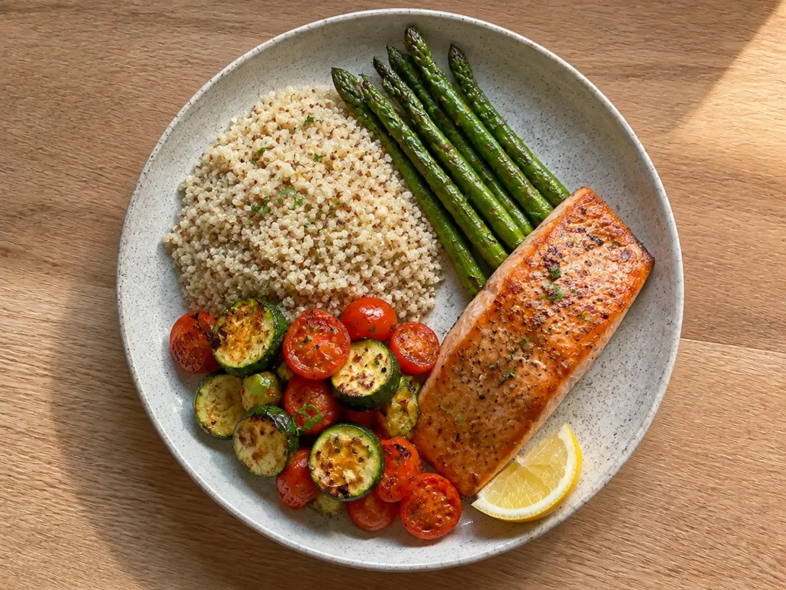

免费
建立日常节奏
适合日常记录
- 每天 3 次图片分析
- 最近 7 天营养历史
- 全部五个核心标签
- 中文与英文

看看一天的营养如何累积
餐图与累计营养仅为示意从一张照片，到饮食日历
确认食物，按实际情况调整份量。
仅作演示，不上传照片，也无需登录。
 试试这份示例餐食
试试这份示例餐食多记下一餐，多看清一点日常。
会变化的 14 天视图
示意数据 · 8 月 4–17 日
左右滑动，查看所有日期 ↔
走进食养日历
不只是拍照。记录、回顾和发现，融入同一个日常。
把天气、节气和下一餐的灵感，放在一眼就能看到的地方。
应用截图含演示记录，部分功能需开通会员。
在天气与营养视图间切换，打开日期，回看当天保存的餐食。
应用截图含演示记录，部分功能需开通会员。
核对识别出的食物和份量，再把营养估算保存进日历。
应用截图含演示记录，部分功能需开通会员。
在食物、食养、茶饮和养生分类中，发现熟悉食材的新用法。
应用截图含演示记录，部分功能需开通会员。
完善个人资料，按日常需要选择和调整营养目标。
应用截图含演示记录，部分功能需开通会员。
回看每日记录，从热量、蛋白质等营养变化中了解饮食习惯。
应用截图含演示记录，部分功能需开通会员。
简单清晰
免费下载，并提供可持续使用的免费方案。可选 Premium 会员采用自动续订订阅，当前价格与试用资格以 App Store 显示为准。
免费
适合日常记录
可选 PREMIUM
适合深入了解营养趋势
始终由你掌控
关于食养日历 APP
食养日历：NourishDay 是 Jianna Consulting, LLC 开发的中英双语饮食记录与营养追踪 App，将拍照记餐、热量与营养估算、营养日历和节气食养参考放在一起。英文 App Store 名称为 NourishDay: Food Calendar。
拍摄餐食或选择已有图片，确认后才会上传分析。AI 提供食物与份量候选，营养估算来自经过审核的食物目录。你可以核对、修改食物和份量，再确认要保存的记录。照片不能精确测量营养含量。
可以。已保存的餐食会汇总成热量、蛋白质、碳水化合物、脂肪、膳食纤维等营养记录。点击营养日历中的日期，可以回看当天估算对应的餐食，也可以手动录入食物。
食养日历结合当地天气与二十四节气，提供食物、茶饮和日常生活阅读参考。传统食养内容用于文化与健康教育，不代表已测量的营养功效，也不构成治疗建议。
通过 App Store 下载食养日历：NourishDay。支持运行 iOS 或 iPadOS 16 及以上版本的 iPhone 和 iPad，并提供 Apple Watch 营养摘要。应用内包含英文与简体中文。
可以。登录后可持续使用免费方案，包含五个核心标签、每天最多三次图片分析，以及最近七个自然日的营养历史。可选 Premium 会员提供每天最多二十次分析、完整营养历史和跨设备同步，订阅价格与试用资格以应用内显示为准。
不是。食物识别、份量估算、营养记录和节气食养内容仅用于教育与日常健康参考，不构成医疗建议、诊断或治疗。涉及疾病、过敏、孕期、用药或特殊饮食限制时，请咨询合格的专业医务人员。
现已上线 APP STORE